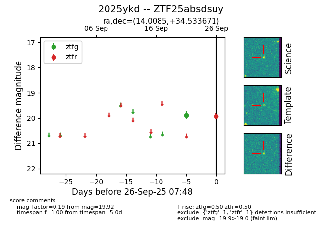

FINK: ZTF25absdsuy
Lasair: ZTF25absdsuy
ALeRCE: ZTF25absdsuy
TNS: 2025ykd
YSE: 2025ykd
ZTF25absdsuy (ztf,fink)
2025ykd (tns,yse)
equatorial (ra, dec) = (14.0085,+34.53367)
galactic (l, b) = (124.0072,-28.32848)

last ztfg=19.87, ztfr=19.92
1 ztfg, 1 ztfr detections